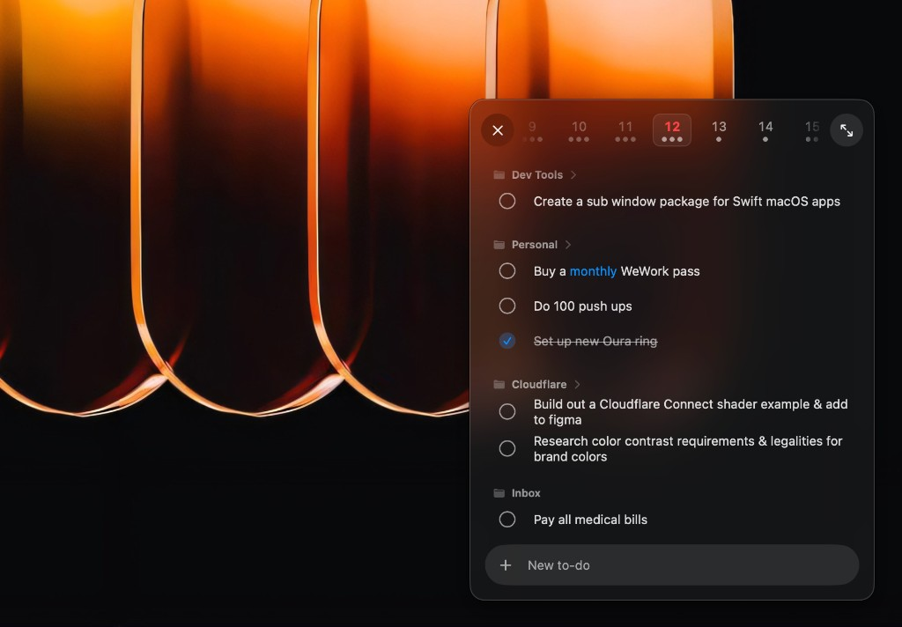

SpaceFollowKit
Deterministic macOS Space handoff for subwindows.

Installation
$ swift package add https://github.com/tjcages/space-follow-kit.gitUsage
import SpaceFollowKit
Window("Quick Capture", id: "quick-capture") {
QuickCaptureView()
.subwindowSpacesBehavior(storageKey: "subwindowsOnAllSpaces")
}